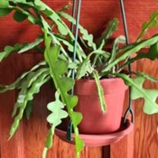
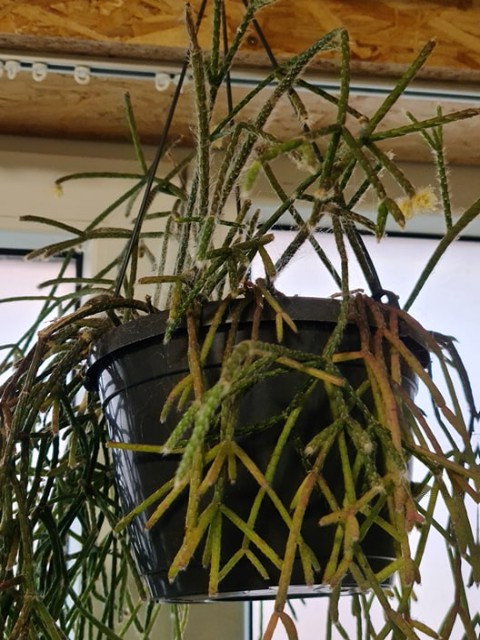
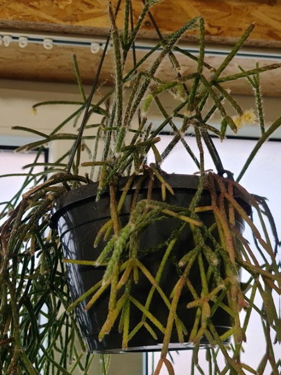

| Nom et photo | Exposition | Arrosage | Rempotage | Saisons |
|---|---|---|---|---|
| Disocactus macranthus |
Lumineuse avec très peu de soleil direct sauf celui matin et du soir ou d'hiver. | Régulier en laissant le substrat sécher entre 2 arrosages. En hiver moyen. | Terreau normal pour plantes d'intérieur mélangé avec du sable de rivière. Pot en plastique de taille moyenne suspendu. | Été en intérieur ou extérieur et en hiver, intérieur en pièce fraîche. |


| Nom et photo | Exposition | Arrosage | Rempotage | Saisons |
|---|---|---|---|---|
| Epiphyllum anguliger  |
Lumineuse avec assez peu de soleil direct sauf celui d'hiver qui est sans danger. | Régulier en laissant le substrat sécher entre 2 arrosages. Modéré en hiver | Terreau normal pour plantes d'intérieur mélangé avec du sable de rivière. Pot en plastique de taille moyenne suspendu. | Été en intérieur ou extérieur et en hiver, intérieur en pièce fraîche. |

| Nom et photo | Exposition | Arrosage | Rempotage | Saisons |
|---|---|---|---|---|
Hatiora salicornioides |
Lumineuse avec assez peu de soleil direct sauf celui d'hiver qui est sans danger. | Moyen en laissant le substrat sécher entre 2 arrosages. Aucun en hiver | Terreau normal pour plantes d'intérieur mélangé avec du sable de rivière. Pot en plastique de taille moyenne suspendu. | Été en intérieur ou extérieur et en hiver, intérieur en pièce pas trop fraîche. |
| Nom et photo | Exposition | Arrosage | Rempotage | Saisons |
|---|---|---|---|---|
Lepismium cruciformis |
Lumineuse avec soleil direct du matin et du soir, soleil d'été après acclimation. | Modéré et régulier en laissant le substrat sécher entre 2 arrosages. Très peu à aucun en hiver | Terreau normal pour plantes d'intérieur mélangé avec du sable de rivière. Pot en plastique de taille moyenne suspendu. | Été en intérieur ou extérieur et en hiver, intérieur en pièce fraîche. |

| Nom et photo | Exposition | Arrosage | Rempotage | Saisons |
|---|---|---|---|---|
Pseudorhipsalis ramulosa |
Lumineuse avec soleil direct du matin et du soir, soleil d'été après acclimation. | Régulier en laissant le substrat sécher entre 2 arrosages. Moyen en hiver | Terreau normal pour plantes d'intérieur mélangé avec du sable de rivière. Pot en plastique de taille moyenne suspendu. | Été en intérieur ou extérieur et en hiver, intérieur en pièce pas trop fraîche. |

| Nom et photo | Exposition | Arrosage | Rempotage | Saisons |
|---|---|---|---|---|
Rhipsalis |
Lumineuse avec soleil direct du matin et du soir, soleil d'été après acclimation. Il prend une teinte rouge au soleil. | Modéré et régulier en laissant le substrat sécher entre 2 arrosages. Moyen en hiver | Terreau normal pour plantes d'intérieur mélangé avec du sable de rivière. Pot en plastique de taille moyenne suspendu. | Été en intérieur ou extérieur et en hiver, intérieur en pièce pas trop fraîche. |
 

| Nom et photo | Exposition | Arrosage | Rempotage | Saisons |
|---|---|---|---|---|
| Selenicereus validus |
Lumineuse avec soleil direct du matin et du soir, soleil d'été après acclimation. | Modéré en laissant le substrat sécher entre 2 arrosages. En hiver aucun. | Terreau normal pour plantes d'intérieur mélangé avec du sable de rivière. Pot en plastique de taille moyenne suspendu. | Été en intérieur ou extérieur et en hiver, intérieur en pièce fraîche. |